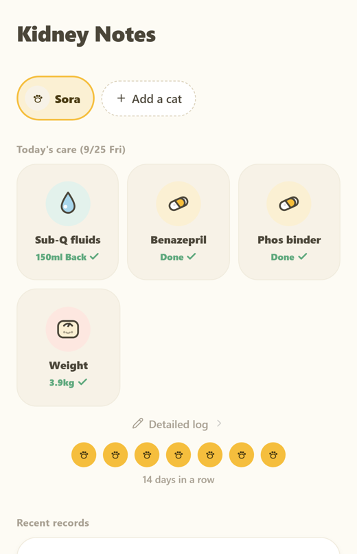
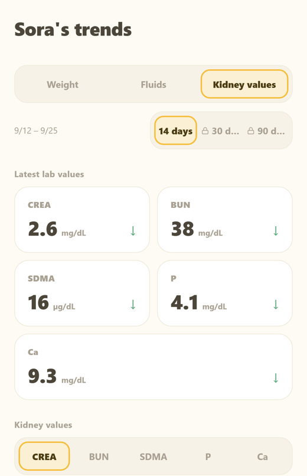

For veterinary teams
Kidney Notes for Cats — a daily care log your CKD clients can bring to rechecks
Owners of cats with chronic kidney disease manage fluids, medications and appetite at home every day, but recalling the last few weeks in the exam room is hard. Kidney Notes helps them keep a simple daily record and arrive with a clean summary instead of memories.
What owners log (one tap, under 30 seconds a day)
- Sub-Q fluids: volume presets and a suggested injection site for rotation
- Medications: check-off, daily reminders and low-stock alerts
- Weight, appetite (4 levels), water intake, vomiting, urine and stool counts, free notes
- Lab values from your reports: CREA, BUN, SDMA, P, Ca, plus photos of the lab sheets
What you see
- A 30- or 90-day PDF: a day-by-day table of the home log with lab trends
- Days with vomiting or low appetite are highlighted, so changes are easy to spot
- Owners can show it on their phone, email it, or print it before the visit
For your clients
- All daily logging is free, with no ads and no account
- Data stays on the owner's phone; the developer receives no health data
- Optional premium (multiple cats, full history, PDF export) is a subscription the owner chooses
- Available on iPhone and Android in the US, UK, Canada, Australia, New Zealand, Ireland and more
What it is not. Kidney Notes is a record-keeping tool. It does not diagnose, stage, interpret lab values, set targets or recommend treatment, and it reminds owners to follow their veterinarian's instructions and contact the clinic about any concern.

